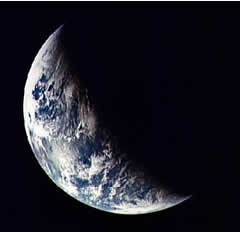
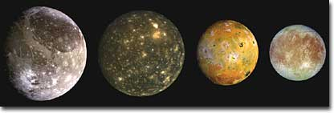

Use Wikipedia |
revised 6 February 2005
Earth, Water & Life |
Life, as we know it, depends upon liquid water. Water is the solvent for most biological reactions. Living things are ~70% water. The properties of water shape every aspect of life, from the chemistry of biologic reactions, the shape of macromolecules, the organization of cells, tissues and organs, an organism's physiology and its place in the environment. In this lab we will perform a series of experiments to learn more about the properties of water and the process of diffusion |
 |
| Water is abundant in the universe. In our own solar system, a number of the planets and moons have surface water. There is strong evidence that at least three of Jupiter's moons, Europa, Callisto and Ganymede, have oceans of liquid water below their frozen surfaces.
|
| Does life exist in these subsurface oceans? Is life as common as liquid water or is it rare? |
Ganymede,Callisto,
Io & Europa |
To understand water, you must understand some relatively simple chemistry. A molecule of water has the formula H2O. A mole of water is 6.02 x 1023 molecules and weighs ~18 grams (abbreviated g). |
|
If you know the molecular weight of a compound in grams, you know the weight of a mole of these molecules. You might think that knowing a molecule's composition and weight would reveal how it behaves, but things are not quite that simple. How the atoms are arranged is a critical determinant of a molecule's behavior. |
Use Wikipedia |
revised 6 February 2005 |